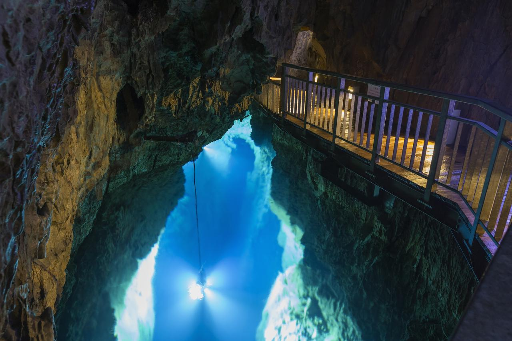

平泉は、平安時代の末期に奥州藤原氏三代によって黄金時代を迎えました。戦のない平和な世界”理想郷”を実現させるために「中尊寺」は設立されました。中でも、建物一面に金箔を重ねた豪華絢爛な「金色堂」は、一番の見どころでしょう。中尊寺には、金色堂の他にも中尊寺経蔵や能舞台など国宝と重要文化財が3,000点以上もあります。また、平泉は２０１１年に世界遺産に認定されています。

龍泉洞は日本三大鍾乳洞の一つとされており、洞内に棲むコウモリと共に国の天然記念物に指定されています。洞内はすでに知られているだけで4,088m以上あり、全容は5,000mに達すると言われています。現在、見つかっている地底湖は８つあり、そのうち３つが公開されています。湧き上がる清水は世界有数の透明度を誇り、ドラゴンブルーと称される幻想的に輝く湖面を望むことができます。
「三鉄（さんてつ）」の愛称で呼ばれている「岩手三陸鉄道」は、２０１３年のNHK朝の連続ドラマ小説「あまちゃん」の舞台となったことでも有名です。
久慈から宮古までを結ぶ「北リアス線」の車窓からは緑美しい山々を、釜石から盛岡までを結ぶ「南リアス線」の車窓からは雄大なリアス式海岸などを望む絶景スポットが各所にあります。
また、季節や年によって異なる企画を開催する「企画列車」もおすすめです。